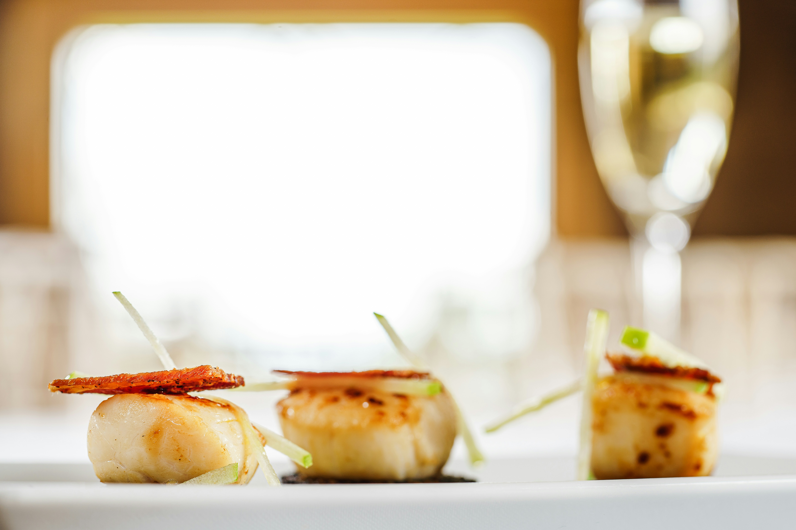

Bacon Wrapped Scallops

Savory Crispy Scallops
Ingredients
- Bacon Scallop Ingredients
- 2 pounds large sea scallops patted dry
-
▢ 1 pound bacon slices cut in half crosswise
-
▢ 1/4 cup maple syrup
-
▢ 2 tablespoons soy sauce
-
▢ 1/4 teaspoon garlic powder
-
▢ salt and pepper to taste
-
▢ 2 tablespoons chopped parsley
-
▢ cooking spray
Directions
- heat fondu pot
- Prepare the Scallops:
-
Preheat the broiler. Coat a sheet pan with cooking spray.
-
Wrap a slice of bacon around each scallop and secure with a toothpick. Arrange the
scallops in a single layer on the baking pan.
-
In a small bowl, mix together the maple syrup, soy sauce, garlic powder, salt and
pepper. Brush half the mixture over the top of each of the scallops.
-
Broil for 10-15 minutes, or until bacon is crisp and scallops are cooked through. Brush
the remaining sauce over the scallops halfway through the cook time.
-
Sprinkle with parsley, then serve.